——1921年9月28日，韦恩堡《新闻前哨》
整数8的触角延伸到了很多地方，从美味的披萨问题到有趣的生命游戏和高耸的E8。就像章鱼的触角一样，整数8会用完美的洗牌和美丽的塞宾斯基毯抓住你。尽情享受吧！
披萨问题
雅克布和卢卡斯烤了一个圆形披萨，准备开始享用。雅克布要卢卡斯把披萨分成8等份，先标出中心点，然后通过中心点划4刀，每刀间隔45°。卢卡斯已经饿坏了，但还是照着做了，不过在找中心点的时候偏了许多，结果分出来的披萨既有巨人族尺寸，也有矮人族尺寸。卢卡斯心想坏了，但很快又有了微笑。他想起了披萨定理：如果他们轮流拿，两人的披萨就会一样多。图8.1给出了漂亮的图形证明。
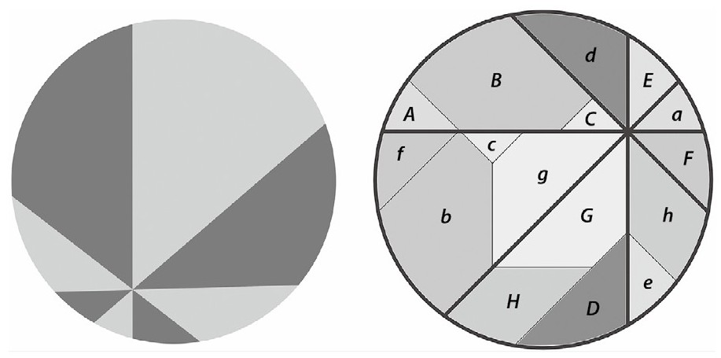
图8.1 披萨定理和证明
洗牌
一副标准扑克牌要洗多少次才能确保洗好了？对于大多数人来说，三四次似乎就足够了，一些人会多洗几次，不过大多数扑克牌老手都知道这不够。聪明的赌徒和桥牌手会利用洗牌前的情况获取没有充分洗好的牌的信息，从而他们也会赢得更多。
要洗匀扑克牌需要洗多少次呢？我们先解释一下洗一次的意思是一次随意地交替洗牌。1992年，研究者用计算机仿真了这个问题，并猜想7次就可以洗匀扑克。后来，他们给出了细致的数学证明，也认为再继续洗不会显著地提高均匀度。
但如果是完美洗牌呢？一次完美的交替洗牌——有时候也称为完美洗牌——是将扑克等分两份，然后从顶上开始各取一张交替叠放。例如一叠扑克牌{1，2，3，4，5，6，7，8}，通过一次完美洗牌后交替叠放为{1，5，2，6，3，7，4，8}。可以证明8次完美洗牌会让52张的标准扑克回到开始时的顺序。要从数学上认识这一点，只需注意到：如果一张扑克开始时的位置是k，一次完美洗牌后，如果k≤26，它的位置将是2k−1，如果k＞26，则是2k-52。例如从位置5开始的牌的位置变化是：
5→9→17→33→14→27→2→3→5，
整副牌的变化参见图8.2所示。
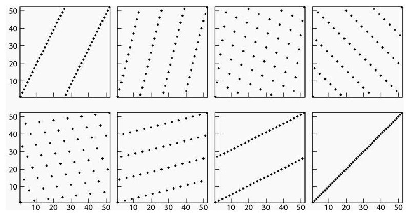
图8.2 一副扑克牌的8次完美洗牌。横轴是扑克牌的数字，纵轴是牌的位置
生命游戏
经典应用数学的世界里经常写满了微分方程，这是微积分的一个分支。用这种方程对各种现象进行建模取得了巨大的成功，例如流体、弹性力学和宇宙学。这个方法的核心是假定在无穷小——可以认为是亚微观——层面上有某个物理定律在起支配作用。
不过在许多现象中，支配规律只在宏观层面上有意义。虽然微分方程也被用于研究交通流和人口增长，但这些场景中基本的对象——汽车和人——是离散物体。研究离散场景中的规律可能会更有意义。汽车是不是仅仅依据前车位置减速？哪些因素会影响人类的生育率？在群聚生物的数学模型中——可以是鱼，鸟，昆虫，等——数学家在对群落活动进行建模时使用局部（可以认为是“身边”）性质。其中包括与你旁边的生物保持相同的运动方向，接近它们，但不要撞上。20世纪40年代，数学大师乌拉姆和冯·诺伊曼从抽象层面上研究了这种离散的邻近模型。这种模型称为元胞自动机，计算机科学家和理论生物学家对此都有研究。元胞自动机（CA）由元胞格子组成，每个格子都有有限种状态。一旦规定了CA的演化规则，就可以研究这种系统的长期行为。
冯·诺伊曼想知道在CA中是不是有某种初始状态的一部分能够复制自身。他的确创造了一个复杂的例子实现了他的目的，但CA得到广泛关注是在约翰·康威发明了现在所谓的生命游戏之后（不要与布莱德利发明的棋盘游戏相混淆）。康威的生命游戏在1970年被发明出来之后，在1970年10月的《科学美国人》上，马丁·加德纳在“数学游戏”专栏对其进行了介绍，从而变得广为人知。
生命游戏的规则十分简单，却能够展现出复杂迷人的现象。在一个矩形格子上，每个元胞都有8个邻居，这些邻居有时候也称为元胞的摩尔近邻（图8.3）。
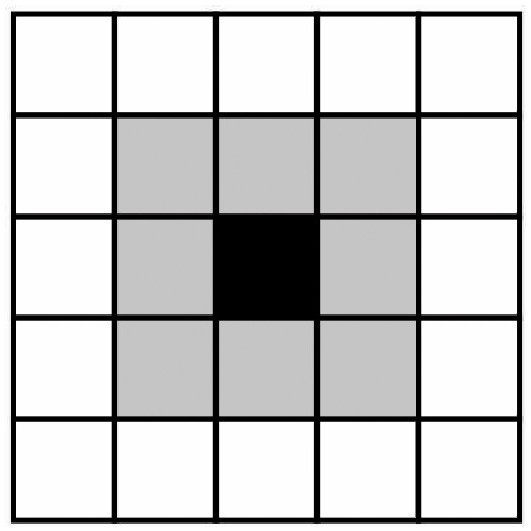
图8.3 生命游戏的摩尔近邻
在每一代，元胞可以是开或关——活或死。下一代每个元胞的状态由它和它的邻居的当前状态决定：
生命游戏因为能够生成各种迷人的图案而很快流行起来。这些图案（图8.4）有的不变（“块体”、“船”和“蜂巢”），有的在有限步迭代后重复（“闪光灯”和“癞蛤蟆”），有的会错位重复自身，因此看起来好像在网格上移动（“滑翔机”和“太空船”）。一些图案会像蘑菇一样变得很大，但最终会崩溃，什么都没留下。康威猜测没有有限的图样能无限生长。这个让人怀疑的约束被“滑翔机枪”的构造去除，这种图样能够摆动自身并定期发射出滑翔机，飞往无穷远处。另一个例子是“喷烟火车”，它像滑翔机一样能够错位复制自身，但身后会留下痕迹。
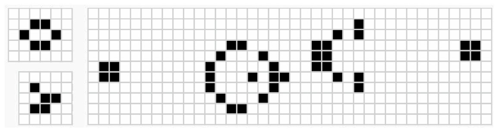
图8.4 生命游戏的图样：蜂巢、滑翔机和滑翔机枪的四个部分
对于理论计算机科学家来说，生命游戏不仅仅是能生成漂亮的图样。通过以创造性的方式利用滑翔机创造或摧毁其他对象，就能模拟与、或和非等逻辑运算。这意味着只要没有内存和时间限制，计算机能做的事情，生命游戏也能做。
生命游戏也启发了在混沌理论、哲学和生物学中研究涌现现象的学者，这个领域研究的是简单规则如何导致复杂的现象。自然界中有一个涌现的例子就是蚁群。每只蚂蚁都是通过接收近邻蚂蚁和局部环境的刺激，而不是通过蚁后或蚁群的某种层级命令来选择自己的职责。这引出了一个问题：自然界存在导致自组织系统的简单规则吗？
杨辉三角形的重复
在研究了多个世纪之后，杨辉三角形依然不断有新的发现和谜题。其中一个问题与重复值有关。当然，在杨辉三角形中整数1会无穷重复，它构成了两边的边界。其他数字n都只会出现最多有限多次，因为它的位置不能超过第n行。
任何不在杨辉三角形最外两层的数字都会出现至少3次，通常是4次。例如
要找到出现次数更多的数字则不那么容易。出现6次的例子包括
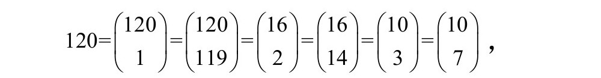
和
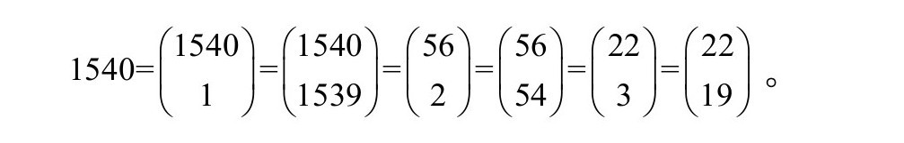
辛马斯特——因为提出了被广泛使用的解魔方而著名——证明了在杨辉三角形中有无穷多个至少出现了6次的数字。对于某个正整数i，令
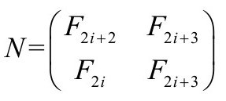
，其中Fn是第n个斐波那契数。则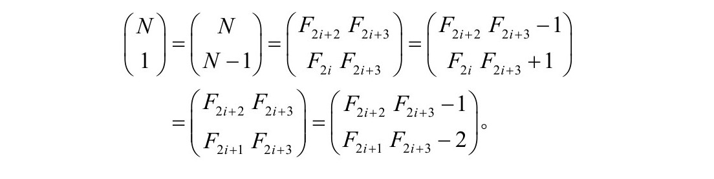
整数3003出现了8次：
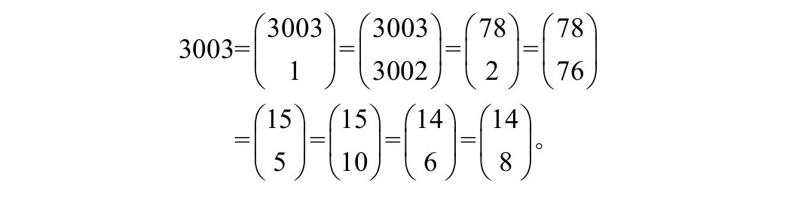
辛马斯特猜想在杨辉三角形中大于1的数字n的出现次数存在上界，他认为可能是10或12，但还没有找到出现次数大于8的例子。
谢尔平斯基毯
20世纪80年代是分形领域发展的年代，只需要很简单的程序就能生成分形，再加上计算机的迅速发展，使得分形在专家和业余爱好者中间都很受欢迎。谢尔平斯基毯就是流行的图案之一。从一个正方形开始，划分成9个相等的小正方形，然后将中间的小正方形拿掉，对剩下的8个小正方形进行相同的操作，不断重复。极限几何图形就是所谓的谢尔平斯基毯（图8.5）。这个物体的面积为0但有无穷长的边界。分形的自相似性可以帮助设计天线。
谢尔平斯基毯可以视为第1章遇到的康托尔集的二维推广。如果以基数3写出方格[0，1）×[0，1）中的点，谢尔平斯基毯是将相同位置上为整数1的点去除。谢尔平斯基毯经常会被它的三角形表兄弟谢尔平斯基镂垫片抢了风头。不过，毯具有特别的拓扑属性：任意一维图形在毯中都可以找到对应像。例如，任意火柴图或树形图都能在谢尔平斯基毯中找得到，只是有些弯折和缩放。在这个意义上，谢尔平斯基毯是普适性的。
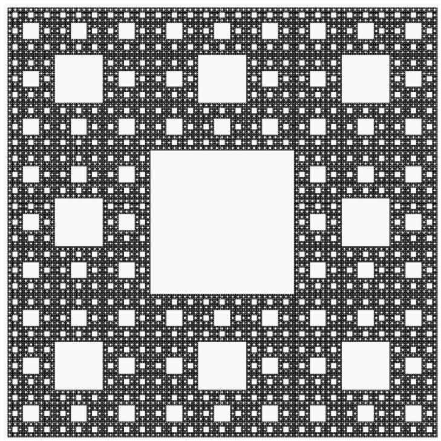
图8.5 谢尔平斯基毯
四元数和八元数
解一元二次方程ax2+bx+c=0的求根公式中会出现复数，复数的平方根虽然初看上去让人不安，实数还是可以漂亮地扩展到这个更广义的系统。我们可以用简单的运算操作复数，例如，加、减、乘、除、开方、指数、对数，等，结果依然是复数。乘的基本公式
（a+ib）·（c+id）=（ac−bd）+i（bc+ad）
可以与其共轭相乘得到第2章见到的婆罗摩笈多-斐波那契恒等式：
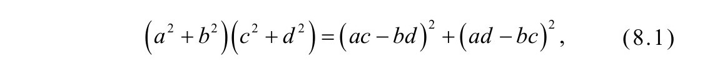
其中a、b、c和d是任意实数。
如果除了1和i，再加上其他“数”，能不能构造出具有有趣性质的更大空间呢？爱尔兰数学家威廉·罗文·哈密顿花了多年寻找这样的空间，但是失败了。不过他沿着这个思路提出了四维代数的思想，并称之为四元数。在这种代数中，有3个不同的虚数i、j和k使得i2=j2=k2=−1。表8.1列出了这4个元素{1，i,j，k}的所有可能乘积。
表8.1 四元数乘法表
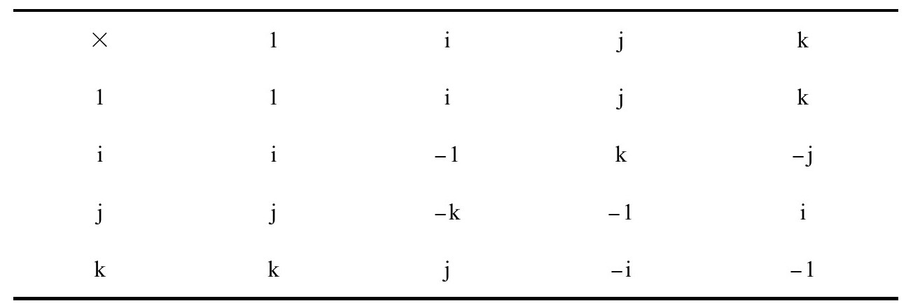
任意四元数x可以表示为x=a+bi+cj+dk，其中a、b、c和d是实数。表8.1可以用来将两个四元数相乘：
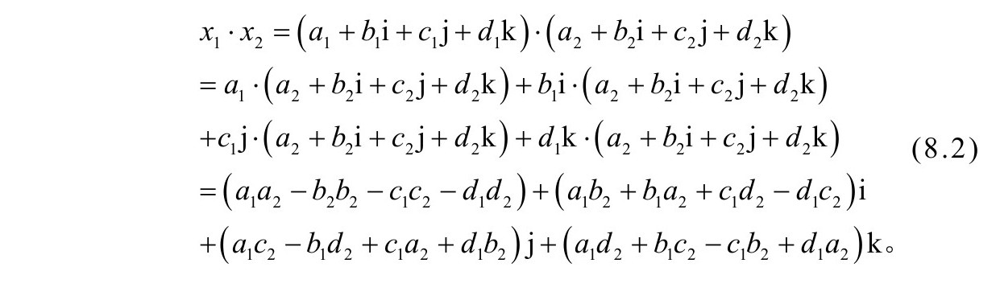
你可能还没有注意到，四元数相乘的顺序对结果有影响。例如，根据表8.1有i·j=−j·i。如果乘法的顺序不同会导致结果不同，我们就说这种代数是不可交换的。
四元数的后面三个成分构成所谓的向量部分。由于这部分是三维的，因此四元数结构可以用来描述三维空间的几何。例如，叉乘——将两个三维向量乘到一起——的包卷结构就与四元数结构有直接关系。
将式（8.2）与其共轭相乘，可以得到第4章中遇到的欧拉四平方恒等式：
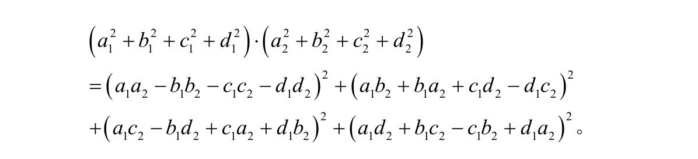
在哈密顿发表他对四元数的研究后不久，他的朋友约翰·格雷夫斯发现了所谓的八元数——一种8维代数。每个八元数x都可以写成
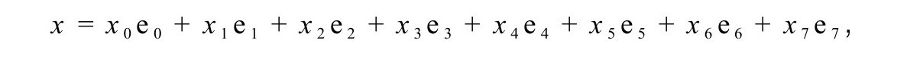
其中系数{xk，0≤k≤7}是实数，单位元{ek，0≤k≤7}各不相同。表8.2是八元数的乘法表。有一个帮助记忆单位e1，e2，……，e7乘法的方法是使用第7章遇到的法诺平面（图8.6）。如果a通过箭头连接到b，则a·b=c，其中c是使得a,b和c共线的唯一单元。
表8.2八元数乘法表
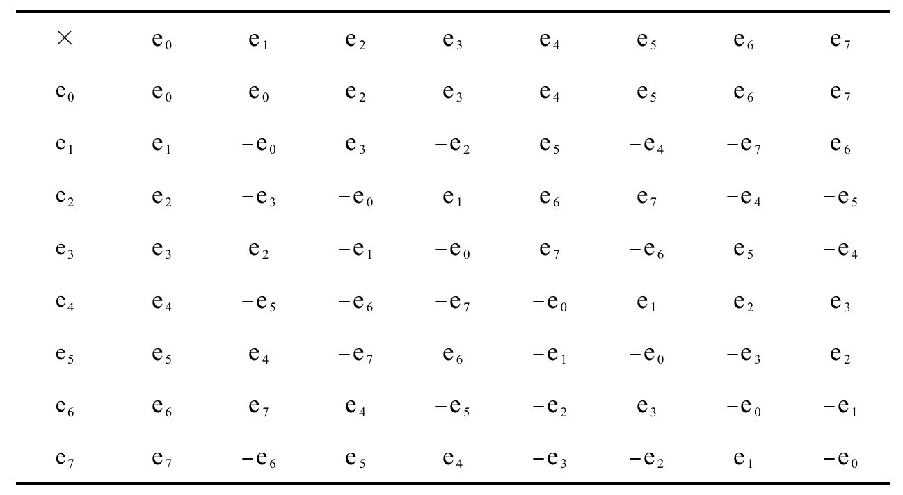
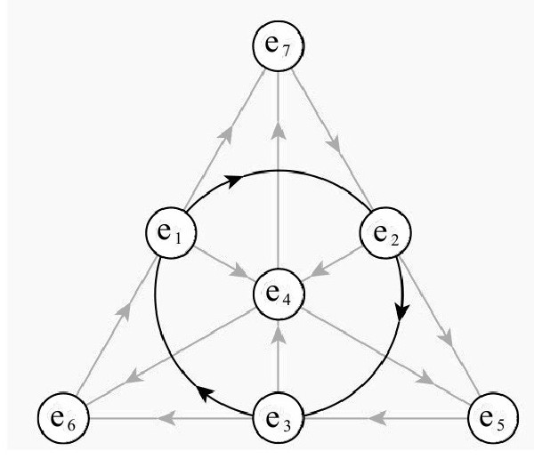
图8.6 利用法诺平面做八元数乘法
与四元数类似，显然八元数也不满足交换律。八元数更加奇怪，它还不满足结合律。也就是说存在（x1·x2）·x3≠x1·（x2·x3）的情况。例如，（e1·e4）·e3=e5·e3=e6，而e1·（e4·e3）=e1·（−e7）=−e6。虽然结构性质更弱，之前应用于四元数的过程还是适用于这里：展开两个任意八元数的乘积，然后将式子与其共轭相乘，这会得出一个公式，其中，两个八平方和的乘积等于八平方和。这个等式由斐迪南·迪根在1818年左右独立发现，被称为迪根八平方恒等式。
阿道夫·赫维兹证明只有4种空间会表现出我们讨论的这种乘法结构：实数、复数、四元数和八元数。从实数出发，我们看到向更大空间的每次扩张都会失去一些结构：复数不再有序，四元数不可以交换，八元数则不满足结合律。约翰·巴艾兹通过将这些代数与家庭成员对比生动地刻画了这种结构的消解：
实数是靠得住的挣钱养家的人，是我们都要依靠的完备有序域。复数是有点玄但仍受尊重的年轻兄弟：无序，但是有完整的代数。不可交换的四元数是古怪的堂兄弟，回避重要的家庭聚会。八元数则是疯狂老叔，不允许走下阁楼：他们是无法结合的（巴艾兹，《八元数》，p.145）。
八元数被冷落多年，因为它们明显与数学物理缺乏关联。20世纪30年代曾热过一阵，但一直到80年代才与弦论关联起来。
E8峰会
我们看到数学家通过辨识对象深层的结构来研究其对称性。例如，立方体可以沿其纵轴旋转一个直角，其8个顶点会占据与原来相同的位置集合。直角旋转可以被再次应用以产生新的变换。沿其他轴的旋转也存在，这些旋转可以组合到一起让立方体顶点保持不变的变换集就是群的一个例子。对群的研究反过来又启发了纯数学、晶体学和数学物理等许多领域。
表示立方体对称性的群是有限群，因为只有有限种方式变换顶点。酒瓶的对称群则有不同的性质。酒瓶可以沿着轴旋转任意角度，对应的旋转群的大小是无穷大，可以表示为圆。这是李群的一个简单例子（以挪威数学家索菲斯·李命名）。李群为理论物理学的许多分支提供了自然的框架。例子包括应用于量子力学的海森伯群和表示粒子物理学标准模型的规范群，这是一个12维的群，而标准模型中有1种光子、3种矢量玻色子和8种胶子。
尤其有趣的是紧李群，这种群的对称性从技术上讲是有界的。表示瓶子的对称性的李群就是这样的例子。事实上，大部分紧李群都属于4种无穷集之一。它们经常用于解释例如在球面几何和射影几何中见到的对称性。不过有5种李群不属于上面任何一种，它们记为E6、E7、E8、F4和G2，被称为例外李群。群E8是最大的，有248维，最近很受关注。
E8群可以用所谓的E8网格构造。这是8维向量（称为根）构成的点网，向量的项具有以下属性：
根的例子包括向量（1，0，0，−1，0，0，0，0）和（1/2，1/2，−1/2，1/2，1/2，1/2，1/2，−1/2），存在240种不同的根。这些根组成的网格有时候也称为“钻石网格”，其中每个格胞的体积为1（这种网格称为单模）。群的维度就是8+240=248，因为有240个根，每个根有8个自由度。
2007年发起了一个名为李群及其表示图集的项目，其中的目标之一就是理解李群E8的表示，它是基于E8网格（图8.7），表示一种使用矩阵来帮助理解群的某种对称的方式。例如，酒瓶的圆就用旋转矩阵作为表示。要理解复杂李群的表示，可以仅关注不可约的基本表示，这种表示扮演的角色就好比素数在正整数中的角色。20位数学家通过多年的研究，花费了77小时的超级计算机机时，最终破解了E8。这个团队发现有453060种不可约表示，并且将表示对之间的关联映射到453060×453060规模的矩阵。值得注意的是产生的信息超过了人类基因组计划绘制的遗传信息。
为什么这个群如此复杂？因为E8与弦论有关，弦论是描述我们生活于其中的物理实在的一种现代范式。杂化弦论认为我们生活在26维空间，而不是通常说的4维空间（3个空间维度加1个时间维度）。为了将维度数量从26维减少到感知的4维，这个理论的一部分认为必然有16维空间以一种巧妙的方式将自己蜷曲起来。在数学上这只有两种方式可以发生，其中一种的解释涉及E8。
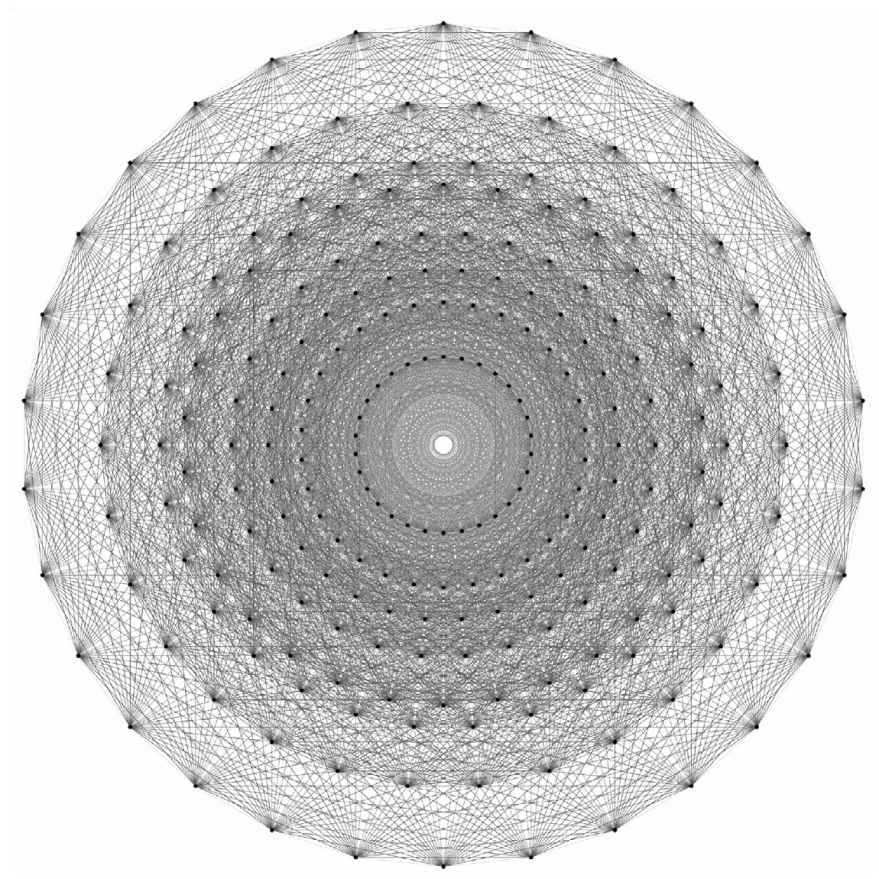
图8.7 E8的投影